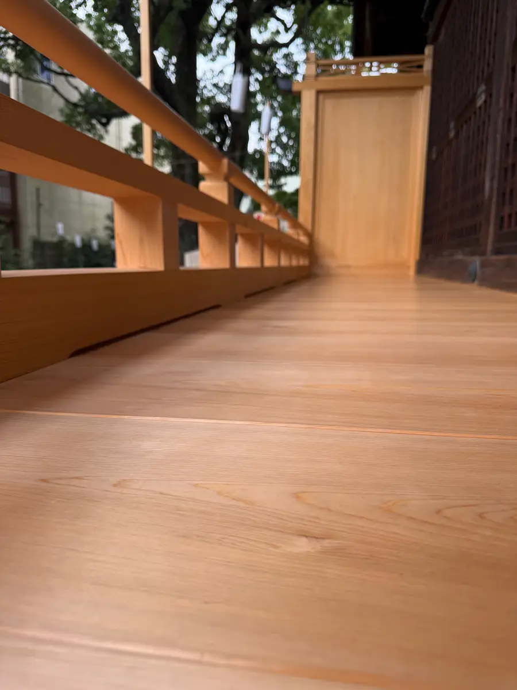
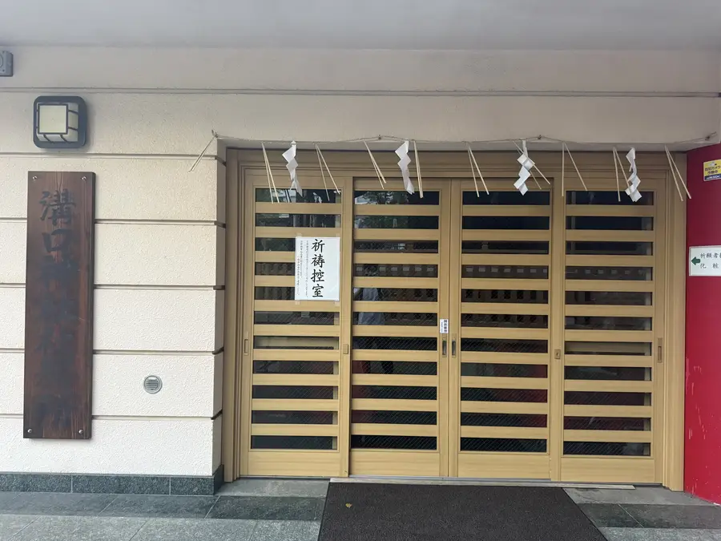
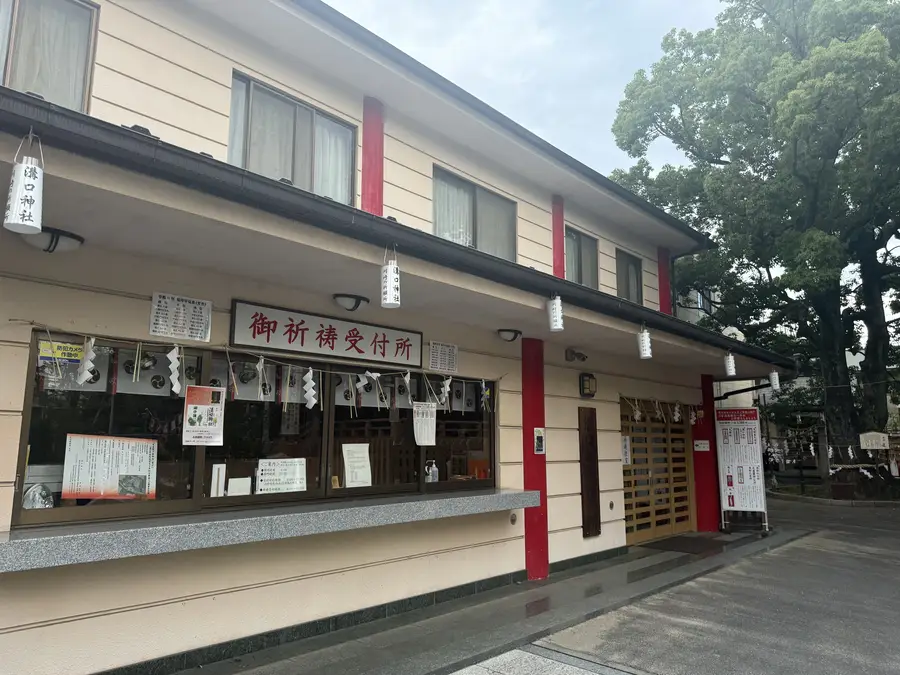
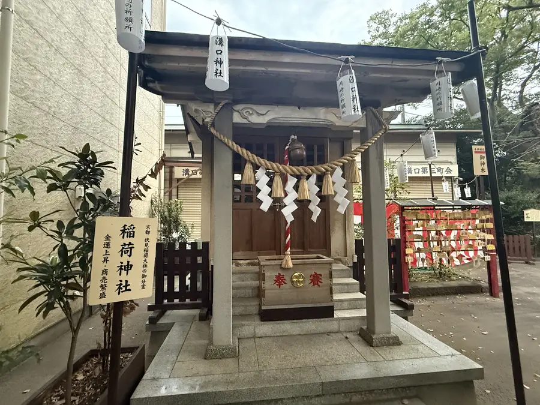
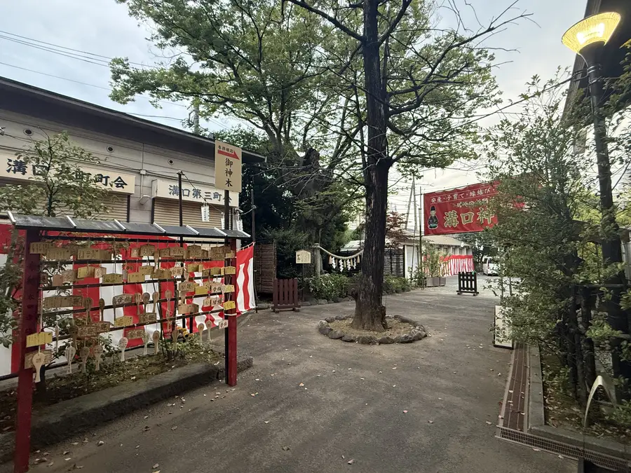
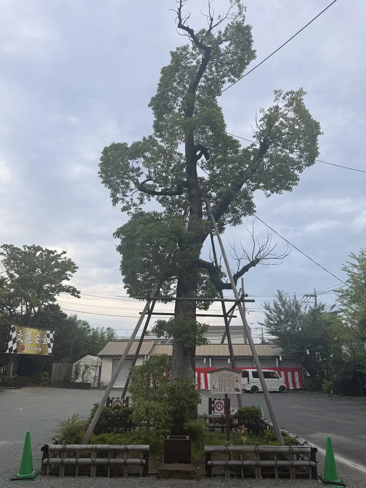
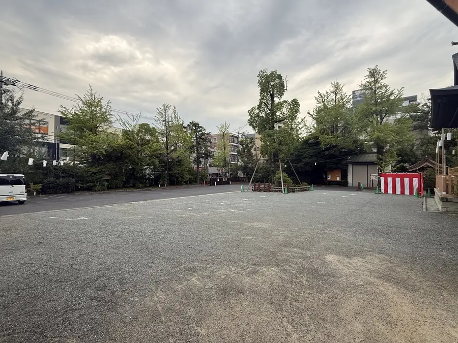

写真は近日掲載
K-01おおとりい
大鳥居
境内の正面に立つ大鳥居。(写真は撮影後に掲載いたします)
地図の番号を選ぶと、その場所の実際の写真とご案内を表示します。順路ボタンで、参拝の流れもご確認いただけます。
■ 建物● 樹木数字 = 地点番号青点線 = 選択中の順路
K-01おおとりい
境内の正面に立つ大鳥居。(写真は撮影後に掲載いたします)

K-02しんきょう
参道の入口に据えられた石の橋。ここを渡って境内へ進みます。


K-03てみずや
参拝の前に、手と口を清める場所です。


K-04ほんでん
御祭神をお祀りする、神社の中心となる建物です。


K-05とうごうへいはちろうほうのうひ
社殿に掲げられた扁額。詳しい由来は確認ののちご案内いたします。


K-06はいでん
御祈祷が行われる拝殿です。


K-07はまえん・かいろう
改名150年記念事業で改修された、社殿をめぐる回廊です。



K-08しゃむしょ
各種お手続きの窓口です。


K-10しゃむしょない
お焚き上げ(古札納所)、絵馬の願い事書き、授乳室がございます。(内部写真は順次追加いたします)


K-11まつおだいみょうじん
境内の石碑。詳しい由緒は確認ののちご案内いたします。

K-12いなりしゃ
境内に鎮座する社です。


K-13ひゃくどいし
お百度参りの起点となる石です。

K-14さんどうけいじばん
年中行事やお参りの作法をご案内しています。

K-15かおはめぱねる
ご参拝の記念にどうぞ。

K-16おやくす
境内で大切に守られている楠の古木です。



K-17こくす
親楠とともに親しまれている楠です。


K-18たらちね
お食い初めの歯固め石をご奉納いただく場所です。


K-19ちょうじゅけやき
境内で大切に守られているけやきの古木です。


K-20がんかけめおといちょう
願掛けの銀杏として親しまれています。

K-21こうつうあんぜんおうだんまく
交通安全祈願のご案内です。

K-22ちゅうしゃじょう
台数に限りがあります。混雑時は公共交通機関をご利用ください。
通常参拝の順路
御祈祷受付への順路
※車椅子・ベビーカー・お車の経路は、現地確認ののち追加いたします。係員の案内がある場合はそちらに従ってください。